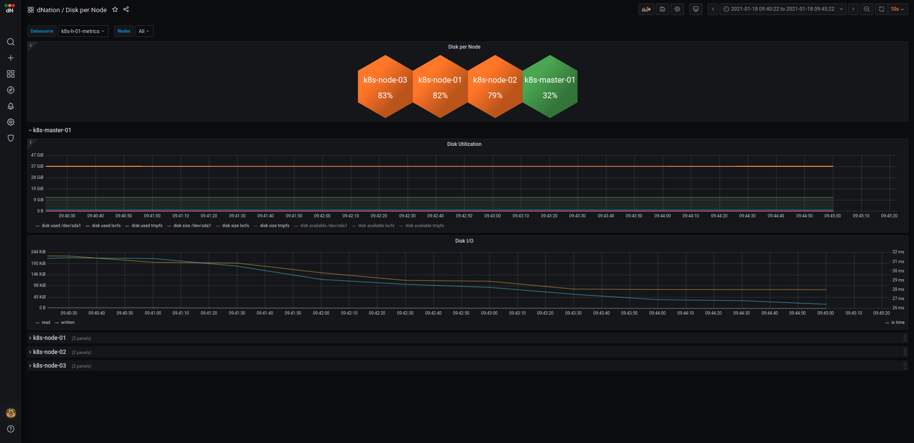
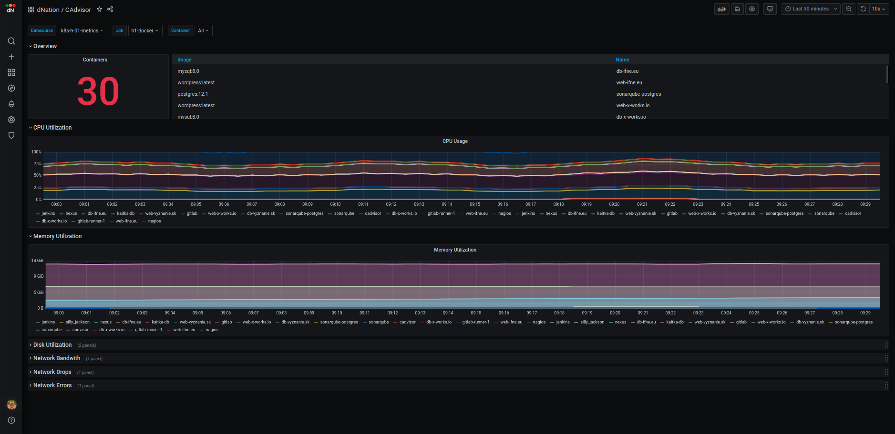
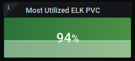

Frequently Asked Questions (FAQ)
How to interpret displayed monitoring values across different monitoring layers?
Monitoring Layer 0

Kubernetes monitoring
Kubernetes cluster health is simply represented by the single state panel. State panel aggregates alerts from the
underlying layer of kubernetes monitoring. The healthy status is represented by the green state panel with 'OK' label. It is displayed if the k8s cluster meets all the defined thresholds for healthy status.
When some threshold is crossed and this state persists for 5 minutes (default), relevant alert is triggered and highlighted.
The orange state panel with Warning label is displayed in case of warning alert. Red state panel with Critical label is displayed in case of critical alert.
We have implemented intuitive green, orange and red color indicators that are signalizing if your action is needed or if everything is OK.
If you want to see more information about your k8s cluster, just drill down by left-clicking on
the relevant state panel. As of now, multi-cluster monitoring support is available.
- If you are interested in the k8s cluster monitoring see How to set up k8s cluster monitoring? section.
- If you are interested in the k8s multi-cluster monitoring see How to set up k8s multi-cluster monitoring? section.
Host monitoring
Host monitoring integration allows you to monitor your hosts infrastructure within our kubernetes based, stable and highly available monitoring. Hosts state panel functions on the same principles as k8s cluster state panel. Multi host monitoring is supported. - If you are interested in the host monitoring see How to set up host monitoring? section.
K8s monitoring Layer 1
 The first layer of k8s monitoring consists of state panels that visualize the current state of your k8s cluster. The state
panels are separated into several sections:
- Alerts
- Overview
- Control Plane Components Health
- Node Metrics (including Master)
- Applications (optional)
The first layer of k8s monitoring consists of state panels that visualize the current state of your k8s cluster. The state
panels are separated into several sections:
- Alerts
- Overview
- Control Plane Components Health
- Node Metrics (including Master)
- Applications (optional)
When a failed condition of monitored k8s element occurs the state panel shows lowered percentage value on health indicator. If the state of health is too low and the percentage value reached warning or even critical threshold, corresponding state panel changes its color. Intuitive green, orange and red color principle is used. When failed state lasts longer than 5 minutes (default) then the relevant alert is triggered and highlighted in alert panel. Also the panel representing the overall health of the k8s cluster in the monitoring layer 0 changes accordingly. The first layer is the source of all aggregated k8s cluster alerts triggered by dNation monitoring.
Alerts
The upper section shows the amount of triggered critical and warning alerts. If you want to see detailed list of triggered alerts simply apply the drill down principle.
Overview
The overview section allows you to monitor the health status of k8s nodes, workloads (deployments, stateful sets, daemon sets, pods, containers and more) and persistent volumes. Each state panel contains important information of monitored k8s element, e.g. single node health state panel gives you an insight on whether the k8s nodes are able to schedule resources or if they are under disk, memory or PID pressure.
Control Plane Components
Monitoring of k8s cluster control plane components (api server, controller manager, etcd database, kubelet, proxy and scheduler) is located in separate section. If you want to check the work queue rate of controller manager or scheduler latency, the Control Plane Components section is the section you are looking for.
Node Metrics (including Master)
Measuring k8s nodes system metrics is important in ensuring k8s cluster availability. Node Metrics section gives you a clear overview
of cluster's CPU, memory, disk and network utilization. Each system metric is visualized in several state panels such as overall (average) utilization panel, the most utilized cluster node panel and information panels which show
used and total state of system metrics. It is always useful to know overall cluster utilization, but it is also important to know when one node is utilized more than other nodes which may indicates that your
k8s cluster doesn't work properly.
If you want to drill down for further investigation of your k8s node you can select between System Overview or K8s Overview buttons.
System Overview shows CPU, memory, disk and network utilization per k8s cluster node in greater detail.
K8s Overview shows systems resource usage in k8s oriented manner, meaning that you can filter particular k8s workload per k8s cluster node
or see information about CPU and memory requests and limits.
Applications
In order to thoroughly understand application health, we created custom dashboards which help us to properly understand and diagnose application workloads in k8s cluster. As of today we have designed several dashboards for well known and widely used frameworks such as java actuator, python flask, nginx ingress controller and more. Layer 1 state panels aggregate important information of monitored application. Green, orange and red color principle informs us if there is action needed and drill down principle can be used to access verbose and detailed application dashboard.
- If you want to customize your L1 layer see How to customize my k8s monitoring? section.
- If you are interested in the k8s application monitoring see How to set up k8s application monitoring? section.
K8s monitoring lower layers
If you want to know details on why is particular stat panel in upper layer green, orange or red, just drill down. Look at some examples from layer 2 and layer 3 of k8s monitoring:
- K8s monitoring Layer 2 example
| Containers | Node Disks | Application |
|---|---|---|
 |
 |  |
- K8s monitoring Layer 3 example
| Containers | Nodes |
|---|---|
 |
 |
Host monitoring Layer 1
 The first layer of host monitoring consists of state panels that visualize the current state of your host. The state
panels are separated into several sections:
- Alerts
- Host
- Applications (optional)
The first layer of host monitoring consists of state panels that visualize the current state of your host. The state
panels are separated into several sections:
- Alerts
- Host
- Applications (optional)
When a failed condition of monitored host element occurs the state panel shows lowered percentage value on health indicator. If the state of health is too low and the percentage value reached warning or even critical threshold, corresponding state panel changes its color. Intuitive green, orange and red color principle is used. When failed state lasts longer than 5 minutes (default) then the relevant alert is triggered and highlighted in alert panel. Also the panel representing the overall health of the host in the monitoring layer 0 changes accordingly. The first layer is the source of all aggregated hosts alerts triggered by dNation monitoring.
Alerts
The upper section shows the amount of triggered critical and warning alerts. If you want to see detailed list of triggered alerts simply apply the drill down principle.
Host
Host section gives you clear overview of host's CPU, memory, disk and network utilization. Each system metric is visualized in several state panels. The main host overall utilization panel and information panels show used and total state of system metric.
Applications
In order to thoroughly understand application health, we created custom dashboards which help us to properly understand and diagnose host applications. As of today, we have designed several dashboards such as cadvisor. Layer 1 state panels aggregate important information of monitored application. Green, orange and red color principle informs us if there is some action needed and drill down principle can be used to access verbose and detailed application dashboard.
- If you want to customize your L1 layer by custom host monitoring template definition, see How to customize my host monitoring? section.
- If you are interested in the host application monitoring, see How to set up host application monitoring? section.
Host monitoring lower layers
If you want to know details why is some stats panel in upper layer green, orange or red, just drill down and click it. See some examples from layer 2 of host monitoring:
| Host Detail | Application |
|---|---|
 |
 |
How to set up k8s cluster monitoring?
Prerequisites
Install dNation k8s monitoring on k8s cluster. See installation steps here.
Set up
K8s cluster monitoring is enabled by default. See the docs:
clusterMonitoring:
enabled: true
clusters:
- name: K8sCluster
label: observer-cluster # The label should be the same as the external_label `cluster` from prometheus
description: 'Kubernetes cluster monitoring'
apps: []
How to customize my k8s monitoring?
We understand that each k8s cluster may contain various workloads or implement various scaling strategies. We tried to do our best and set up suitable defaults based on our production environment experiences, but we know that isn't possible cover the variety of k8s cluster configurations. To tackle this problem, we implemented template logic that allows you to fully customize the default state panels or alerts. You can also create your own to fulfill your k8s cluster monitoring requirements. Currently only first layer is customizable, however, the templating of other layers is under development. For full list of k8s templates see the docs.
If you want to customize default layer 1 template in k8s monitoring just create a simple yaml file:
templates:
k8s:
# Override stats panel title and warning thresholds for the etcd health panel
etcdHealth:
panel:
title: "Custom Title"
thresholds:
warning: 96
alert:
thresholds:
warning: 96

Finally, update your k8s monitoring deployment and override the default monitoring configuration:
helm upgrade [RELEASE] [CHART] -f override.yaml
helpers directory.
How to set up k8s application monitoring?
Prerequisites
Enable or install metrics exporter in your k8s application.
Set up
K8s application monitoring is disabled by default. See the docs. To enable it just create application monitoring definition as follows:
clusterMonitoring:
enabled: true
clusters:
- name: K8sCluster
label: observer-cluster # The label should be the same as the external_label `cluster` from prometheus
description: 'Kubernetes cluster with application monitoring'
apps:
- name: app-example
description: Example of App Monitoring
jobName: flask-app # The job name should be the same as the name which will be retrieved from the `jobLabel`, see the `serviceMonitor` section
templates:
javaActuator: # Application Exporter template
enabled: true
serviceMonitor:
jobLabel: app # The label to use to retrieve the job name from.
namespaceSelector: # Namespaces to transfer from the kubernetes service to the target
matchNames:
- default
selector: # Label selector for services to which this ServiceMonitor applies
matchLabels:
app: flask-app
# Endpoints of the selected service to be monitored
# ref: https://github.com/prometheus-operator/prometheus-operator/blob/master/Documentation/api.md#endpoint
endpoints:
- targetPort: metrics # Name or number of the endpoint's target port
path: /metrics # HTTP path to scrape for metrics
Application monitoring definition contains two main sections: template and serviceMonitor or podMonitor respectively.
The template section defines which template and pre-defined application dashboard will be used.
For full list of pre-defined k8s application templates see the docs.
Application monitoring metrics endpoint is auto-discovered by service monitor
or by pod monitor CRDs.
See the documentation of CRDs to ensure that your application metrics endpoint will be discovered as you want or find some
examples in helpers directory.
Finally, update your k8s monitoring deployment and apply the application monitoring configuration:
helm upgrade [RELEASE] [CHART] -f apps.yaml
How to set up host monitoring?
Prerequisites
Enable or install node exporter in your host. You can use helpers/node_exporter.sh installation script.
Set up
Host monitoring is disabled by default. See the docs. To enable it just create host monitoring definition as follows:
hostMonitoring:
enabled: true
hosts:
- name: host-01
description: Host 01
jobName: host-01
host:
address: 1.1.1.1 # Host IP address
serviceMonitor:
endpoints:
- port: 9100 # Node exporter port
path: /metrics # Node exporter metrics path
host and serviceMonitor.
The host section simply defines the host IP address. The serviceMonitor defines service monitor
CRD endpoint i.e. the host's node exporter port and path. Lot of service monitor parameters are pre-configured to simplify host monitoring configuration. If you are interested how or you want to
override some of these parameters see the chart/templates/hosts directory.
Finally, update your k8s monitoring deployment and apply the host monitoring configuration:
helm upgrade [RELEASE] [CHART] -f host.yaml
How to customize my host monitoring?
To cover variety of host configurations we implemented the template logic in the host monitoring as well. Templates allow you to fully customize the default state panels or alerts. You can also create your own to fulfill your host monitoring requirements. Currently, layer 1 customization is implemented. For full list of host templates see the docs.
If you want to customize default layer 1 template in host monitoring just create a simple yaml file:
templates:
host:
# Override warning thresholds for the CPU utilization panel
overallUtilizationCPU:
panel:
thresholds:
warning: 50
alert:
thresholds:
warning: 50

Finally, update your k8s monitoring deployment and override the default monitoring configuration:
helm upgrade [RELEASE] [CHART] -f override.yaml
helpers directory.
How to set up host application monitoring?
Prerequisites
Enable or install metrics exporter in your host application.
Set up
Hosts application monitoring is disabled by default. See the docs. To enable it just create application monitoring definition as follows:
hostMonitoring:
enabled: true
hosts:
- name: host-01
description: 'Host 01 with application monitoring'
host:
address: 1.2.3.4
apps:
- name: host-01-docker
description: Host 01 Docker Containers
jobName: host-01-docker
templates:
cAdvisor: # Application Exporter template
enable: true
serviceMonitor:
endpoints:
- port: 9101 # Application exporter port
path: /metrics # Application exporter metrics path
Application monitoring definition contains two main sections: template and serviceMonitor.
The template section defines which template and pre-defined application dashboard will be used.
For full list of pre-defined host application templates see the docs.
The serviceMonitor defines service monitor
CRD endpoint, i.e. the application's exporter port and path. Lot of service monitor parameters are pre-configured to simplify application monitoring configuration. If you are curious how or you want to
override some of these parameters see the chart/templates/hosts directory or find some examples in helpers directory.
Finally, update your k8s monitoring deployment and apply the application monitoring configuration:
helm upgrade [RELEASE] [CHART] -f apps.yaml
Why L2 table item has different background color as corresponding L1 stat panel?
If you customized your k8s monitoring, you can see that some table items on L2 layer dashboard may have different background color as corresponding L1 stat panel.
Example:
- Define custom L1 PVC utilization panel with custom thresholds for ELK PVCs

- If you drill down, you can see that corresponding PVC capacity is in Critical state (orange background color)

Currently only first layer is customizable, which caused this unexpected behaviour. Templating of other layers is under development and is planned in v1.1.x release.
Kubernetes Monitoring shows - OR 0% state for some control plane components. Are control plane components working correctly?
Control plane components work probably well, but their metrics server might be disabled, misconfigured
or may not be present at all. For example, if is used OVNKubernetes CNI kube-proxy doesn't exist here.
You should want to check address bindings of control plane components' metrics as follows:
The metrics of etcd and kube-proxy control plane components are by default
bound to the localhost that prometheus instances cannot access.
Also make sure metrics of scheduler and controller-manager control plane
components don't have the same address binding if you want to collect them.
Edit and use kubeadm_init.yaml file to configure kubeadm init in case of fresh K8s deployment.
kubeadm init --config=helpers/kubeadm_init.yaml
Manual setup in case of already running K8s deployment.
-
Setup
etcdmetrics bind address# On k8s master node cd /etc/kubernetes/manifests/ sudo vim etcd.yaml # Add listen-metrics-urls as etcd command option ... - --listen-metrics-urls=http://0.0.0.0:2381 ... -
Setup
kube-proxymetrics bind addressEdit kube-proxy daemon set
Edit kube-proxy config mapkubectl edit ds kube-proxy -n kube-system ...containers: - command: - /usr/local/bin/kube-proxy - --config=/var/lib/kube-proxy/config.conf - --hostname-override=$(NODE_NAME) - --metrics-bind-address=0.0.0.0 # Add metrics-bind-address lineDelete the kube-proxy pods and reapply the new configurationkubectl -n kube-system edit cm kube-proxy ... kind: KubeProxyConfiguration metricsBindAddress: "0.0.0.0:10249" # Add metrics-bind-address host:port mode: ""kubectl -n kube-system delete po -l k8s-app=kube-proxy -
Setup
schedulermetrics bind address# On k8s master node cd /etc/kubernetes/manifests/ sudo vim kube-scheduler.yaml # Edit bind-address and port command options ... - --bind-address=0.0.0.0 - --secure-port=10259 ... -
Setup
controller-managermetrics bind address# On k8s master node cd /etc/kubernetes/manifests/ sudo vim kube-controller-manager.yaml # Edit bind-address and port command options ... - --bind-address=0.0.0.0 - --secure-port=10257 ...
You should also check:
* TLS configuration of prometheus components responsible for scraping controller-manager and scheduler.
If you don't want to set up TLS, you can skip validation as shown here.
- Authorization to access
controller-managerandscheduler. You can skip authorization for some endpoints by setting--authorization-always-allow-paths: "/healthz,/readyz,/livez,/metrics"inkubeadm_init.yaml(see example for kind cluster) or manually in already running K8s deployment by following same steps as above when setting metrics bind address.
How to set up k8s multi-cluster monitoring?
Prerequisites
Install dNation k8s monitoring on k8s cluster. See installation steps here.
Set up
Multi-cluster monitoring is supported by default. All you need to do is just to install dNation Kubernetes Monitoring with custom values as shown in example here.
clusterMonitoring:
enabled: true
clusters:
- name: Observer
label: observer-cluster
description: 'Kubernetes cluster with application monitoring'
apps: []
- name: Workload
label: workload-cluster
description: 'Kubernetes cluster with application monitoring'
apps: []
Do not forget to set the correct labels for your clusters!